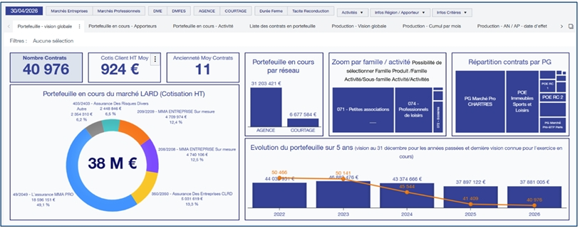
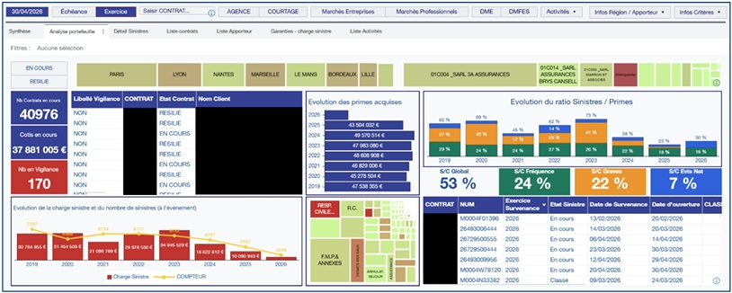

Mon alternance s'est déroulée sur l'ensemble de l'année universitaire au sein d'un service actuariat, dans un environnement de données assurantielles complexes.
MMA est une marque du groupe d'assurance mutualiste Covéa, qui réunit également MAAF et GMF. Fort de près de deux siècles d'histoire, MMA est aujourd'hui le deuxième assureur des professionnels et des entreprises en France, avec une offre couvrant les risques professionnels, les risques d'entreprise, les dommages aux biens, l'épargne et l'assurance vie, ainsi que la santé et la prévoyance.
À l'échelle du groupe, Covéa est un leader européen de l'assurance et de la réassurance, fort d'environ 25 000 collaborateurs et de plus de 11 millions de clients et sociétaires en France. Le groupe s'appuie sur sa filiale PartnerRe pour la réassurance à l'international et revendique une solidité financière reconnue dans le secteur.
C'est au sein du service actuariat de MMA que mon alternance s'est déroulée, sur un marché spécifique nécessitant une bonne compréhension des enjeux métier autant que des compétences techniques en traitement de données.
Intégration au sein du service actuariat de MMA, compagnie d'assurance du groupe Covéa, sur le marché LARD (Loisirs, Associations et Risques Divers). Parmi les différents marchés couverts par MMA, le marché LARD se distingue par une très grande diversité d'acteurs : associations sportives et de loisirs, structures de loisirs (bowlings, kartings, parcs d'attractions), mais aussi établissements scolaires comme des écoles primaires ou des crèches.
Cette diversité est renforcée par la densité du réseau associatif en France, qui compte environ 1,5 million d'associations proposant des activités très variées, créant ainsi une forte hétérogénéité parmi les organisations composant ce marché. Ces structures sont confrontées à des risques spécifiques, notamment en responsabilité civile (RC) et en dommages aux biens (DAB).
Pour MMA, bien connaître les activités composant ce marché constitue un enjeu majeur : une meilleure compréhension de la nature de ces activités permet de mieux mesurer les risques encourus par les organisations assurées, et donc de mieux couvrir les clients en cas de sinistre. C'est dans cette optique qu'intervient le service actuariat, en contribuant à la tarification des contrats, à l'évaluation des risques assurantiels et au pilotage de la rentabilité à l'aide d'outils statistiques — notamment le ratio Sinistres/Primes (S/P), principal indicateur de rentabilité technique utilisé sur ce marché.
Pour mener à bien ce travail, des outils de pilotage de type datavisualisation sont développés. Ils offrent des solutions d'aide à la décision en valorisant des données récoltées et assemblées à partir de différentes bases, dont la fiabilité conditionne directement la pertinence des outils qui en découlent. C'est dans ce cadre que s'est déroulée cette première année d'alternance au sein de MMA.
Conception et alimentation de trois bases de données structurées en SAS Base, constituant le socle analytique des tableaux de bord :
Données des contrats en portefeuille et indicateurs de production — affaires nouvelles (AN) et affaires passées (AP) — pour le suivi de l'activité commerciale du marché LARD.
Primes des contrats, ensemble des sinistres déclarés et réglés, permettant le calcul et le pilotage du ratio Sinistres/Primes (S/P) et la mesure de la rentabilité technique.
À partir de ces bases, développement de deux tableaux de bord interactifs dans SAS Visual Analytics, destinés au pilotage du marché LARD :
Suivi du portefeuille en cours, évolution des AN/AP, répartition par catégorie de risque (sportif, école, crèche…), taux de rétention et indicateurs commerciaux clés.
Analyse de la sinistralité, suivi du ratio Sinistres/Primes par segment, décomposition des charges sinistres, pilotage de la rentabilité technique du portefeuille LARD.


Le secteur de l'assurance constituait un domaine inconnu en amont de l'alternance. Cette immersion a permis de comprendre le fonctionnement d'un contrat d'assurance, les différentes garanties proposées, ainsi que la diversité des activités pouvant être souscrites sur le marché LARD. Elle a également permis d'appréhender la logique de fonctionnement des bases de données utilisées pour recueillir les informations de souscription et de gestion des sinistres.
L'alternance a été l'occasion de découvrir SAS Visual Analytics, un logiciel de datavisualisation comparable à Power BI vu en formation, et d'en comprendre le fonctionnement ainsi que l'architecture. Des phases de test ont été menées pour optimiser les rapports, notamment pour déterminer s'il était préférable de s'appuyer sur des bases séparées ou sur des bases agrégées.
Pour le développement des tableaux de bord, des rapports déjà existants sur d'autres marchés ont servi de modèles afin de conserver les mêmes logiques de construction et la même charte graphique de l'entreprise, tout en partant d'une page vierge pour le marché LARD.
En parallèle, un travail de reprise, modification, adaptation et complément de programmes SAS existants a été réalisé, avec une vérification systématique de la bonne alimentation des données et de l'absence de données manquantes. Une documentation a également été produite, notamment pour tracer l'origine de données techniques telles que le numéro SIRET ou l'activité du contrat.
Cette première année d'alternance chez MMA a constitué une expérience enrichissante, tant sur le plan professionnel que personnel. Sur le plan professionnel, elle a permis de compléter les compétences acquises en formation par de nouveaux apprentissages, qu'il s'agisse du métier de l'assurance, de la prise en main d'un nouvel outil de datavisualisation, ou de la reprise de programmes existants. MMA a constitué à ce titre un cadre de travail et d'apprentissage propice à cette montée en compétences.
Un point d'amélioration identifié concerne le contact avec les autres membres de l'équipe, chacun étant réparti dans des bureaux différents au sein de l'entreprise, ce qui a pu limiter les échanges informels au quotidien.
Sur le plan personnel, cette année a permis de développer la prise d'initiative et l'autonomie au quotidien. Des marges de progression demeurent, notamment en matière de communication et de rigueur dans le travail, deux axes sur lesquels des progrès ont déjà pu être constatés au fil de l'année. La deuxième année d'alternance, qui s'inscrira dans la continuité de cette expérience au sein de MMA, devrait permettre de poursuivre cette progression.